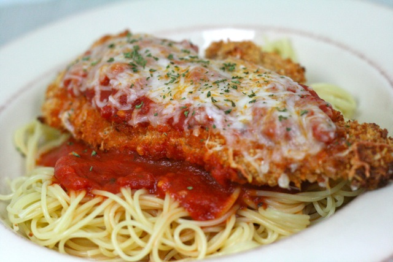

Chicken Parmesan Recipe
Home

Source
/
License
Description
We will be cooking 4 delicious pieces of chicken parmesan using these main ingredients: fresh mozzarella, tomato sauce, and chicken cutlet.
This recipe will require 45 minutes of your time, including 15 minutes to prepare, 20 minutes to cook, and an additional 10 minutes in between.
Ingredients
- 4 chicken breast halves
- Salt and freshly ground black pepper to taste
- 2 large eggs
- 1 cup bread crumbs
- 3/4 cup grated parmesan cheese
- 2 tbsp all-purpose flour
- 1/2 cup olive oil for frying
- 1/2 cup tomato sauce
- 1/4 cup fresh mozzarella
- 1/4 cup fresh basil
- 1/2 cup grated provalone
- 2 tsp olive oil
Steps
- Gather the ingredients. Preheat an oven to 450 degrees F (230 degrees C).
- Place chicken breasts between two sheets of heavy plastic (resealable freezer bags work well) on a solid, level surface. Firmly pound chicken with the smooth side of a meat mallet to a thickness of 1/2-inch.
- Season chicken thoroughly with salt and pepper. Using a sifter or strainer; sprinkle flour over chicken breasts, evenly coating both sides
- Beat eggs in a shallow bowl and set aside. Mix bread crumbs and 1/2 cup Parmesan cheese in a separate bowl, set aside. Dip a flour-coated chicken breast in beaten eggs. Transfer breast to the bread crumb mixture, pressing crumbs into both sides. Repeat for each breast. Let chicken rest for 10 to 15 minutes.
- Heat 1/2 inch olive oil in a large skillet on medium-high heat until it begins to shimmer. Cook chicken in the hot oil until golden, about 2 minutes per side. The chicken will finish cooking in the oven.
- Transfer chicken to a baking dish. Top each breast with 2 tablespoons tomato sauce. Layer each chicken breast with equal amounts of mozzarella cheese, fresh basil, and provolone cheese. Sprinkle remaining Parmesan over top and drizzle each with 1/2 teaspoon olive oil.
- Bake in the preheated oven until cheese is browned and bubbly and chicken breasts are no longer pink in the center, 15 to 20 minutes. An instant-read thermometer inserted into the center should read at least 165 degrees F (74 degrees C).